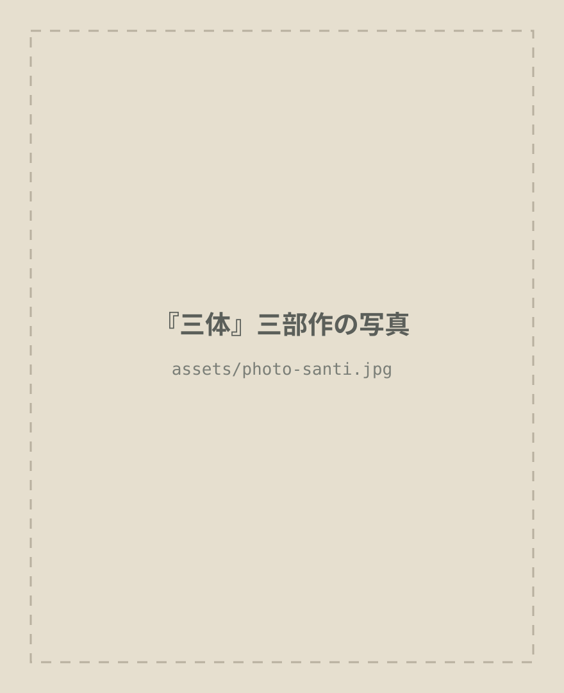
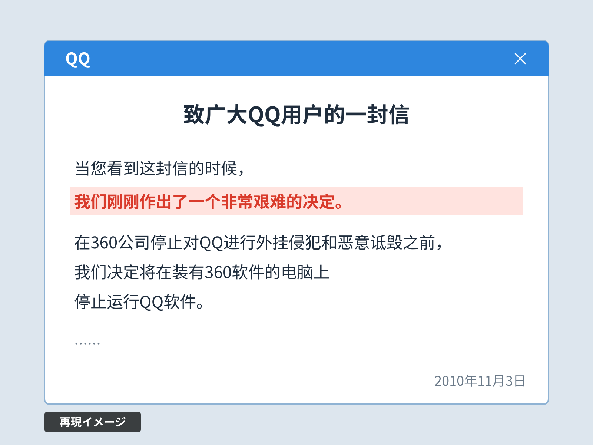
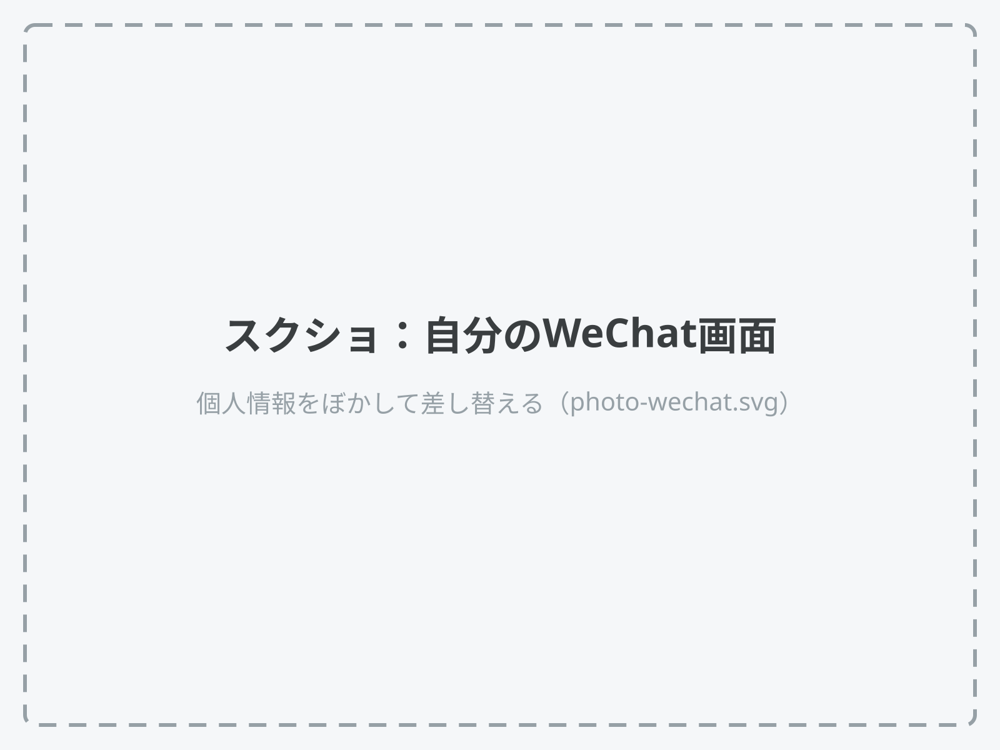
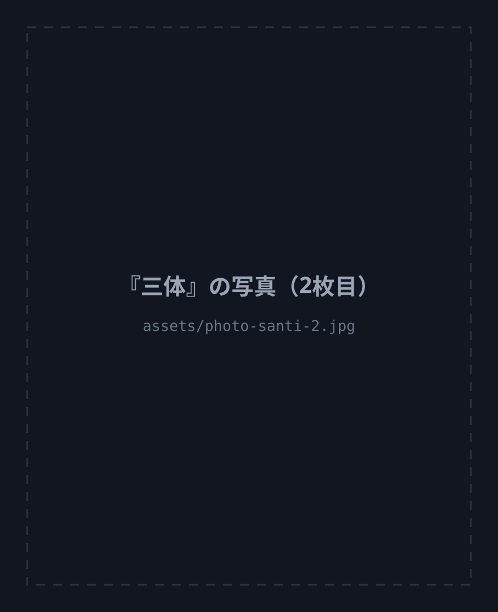

2010年11月、テンセントが選んだ戦略
テンセントは競争をやめなかった。
戦う場所を、顧客の前から
社内へ移した。
日本で100万部。
Netflixでドラマ化。

第2部の考え方に触れます。第3部の展開には触れません。
『三体』の宇宙は、2つのルールから組み立てられている。
小学生のとき、
国語の先生にすすめられた。
「賞をとった本」として、はじめて知った。
おもしろいから。
宇宙人は、
いると思いますか？
いるなら、
なぜ誰も
話しかけてこないのか。
見つけたら、撃つ。
だから、みんな隠れている。
この「森のルール」、
会社でも使える？
これは、営業が一番よく知っている。
人類は、
1つの作戦に賭けなかった。
ムダに見える重複が、
「技術爆発」への保険になる。
中国のIT業界では、これを「競馬」と呼ぶ。
26卒の多くは小学1年生。
Goodpatch創業（2011年9月）の10か月前。
QQ（中国版LINE）と、360（セキュリティソフト最大手）
「QQか360か、どちらかを選べ」
外でのケンカをやめた。同じ頃、社内ではWeChatが始まった
360が入ったPCでは、
QQを止めます。
小学生だった私も、この画面を見た。

再現：テンセント「致广大QQ用户的一封信」（2010年11月3日）、日本語は講演者訳。この文面は中国のネットでパロディが大流行した（"QQ体"）。
出典：呉暁波『テンセント』（プレジデント社）第13〜15章。会社公認の伝記。
三体でいう「猜疑連鎖」
「猜疑連鎖」を、自分から止めにいった（私の読み）
日付が近いのは偶然。WeChatは、張小龍（アレン・チャン）のメールから始まった。
10人、2か月。
同じ月、中国で『三体Ⅲ』が出版された。この重なりは界面新聞（2020年）の指摘。
「もしWeChatが他社から出ていたら、
我々はおそらく
止められなかった」
馬化騰（ポニー・マー）、2013年、講演者訳
私にとっても、
なくてはならないもの。

利用者数：テンセント決算（2025年12月末、WeixinとWeChatの合計）
営業ではタブーの
「同じ客を二人で追う」を、
開発ではあえてやった。
ただし、ケンカを
全部やめたわけではない。
ライバルへのリンクは、2021年までブロックし合っていた。
同じ血統の馬を何頭走らせても、
競技が変われば勝てない。
抖音（TikTokの中国版）が、テンセントの「技術爆発」だった。
戦う場所を、
顧客の前から、社内へ。
いまは、AIで毎月のように
技術爆発が起きる。
そして重複は、AIで安くなった。
26卒へ：まずはNetflixのドラマから。
忙しい社長へ：第2部『黒暗森林』だけでも。

宇宙人に会ったら、撃つ前に、まず話しかけてみます。